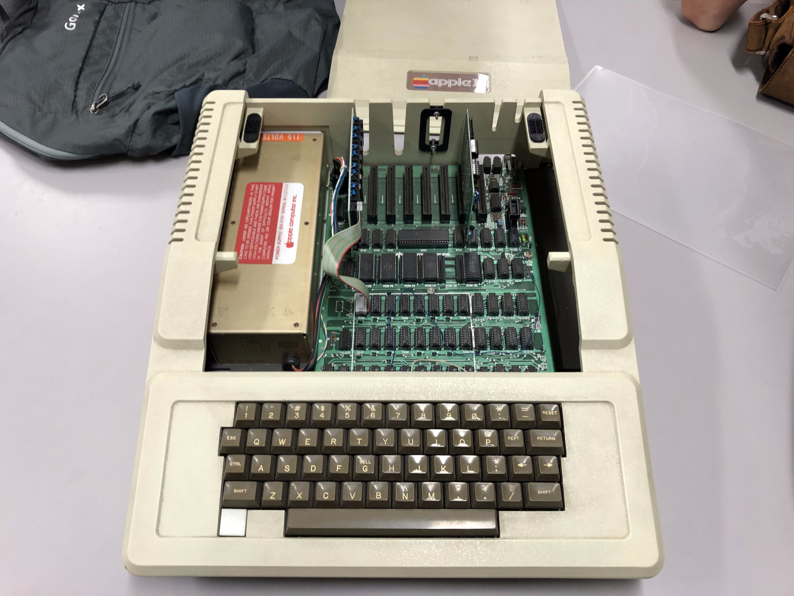

Kyoto VR MQP Team Blog
Week 1 (7/22 - 7/26): Come On and Slam, and Welcome to Japan
Our first week in Japan! How exciting! We arrived at Ritsumeikan, late and exhausted, on Friday 7/19. After taking the next day to rest and recuperate, on Sunday we were off to the Fushimi Inari shrine. It was a beatiful, if not thoroughly exhausting, site-seeing trip. The next day was when our real work would begin.
On Monday 7/22, we met our faculty advisors at Ritsumeikan and began our work. Noma-sensei was incredibly nice and polite, and made us feel welcome in the lab. He also showed us his Apple II computer! (shown below) After lunch, we began our work on our project. We didn't know yet what exactly we would be making, so we did some research on Kyoto VR and location-based AR applications, per Atticus's advice. This continued through Tuesday in preparation for our meeting with Atticus in Kyoto on Wednesday.
The morning of Wednesday 7/24, after a slightly confusing journey, we met up with Ralph and Atticus to discuss what we would be working on. We learned we would be working on a GPS-based AR tourism application for use at historical sites in Kyoto. But there was still plenty to do before we could begin work on the application itself. First, we needed to do more research on what platform to use in the development of our application. So, we spent the next couple days trying out different AR app development kits, learning what each was capable of and how easy to learn and use they each would be. Finally, on Friday 7/26, we had a video meeting with Atticus. We were able to settle on a main focus for the app: an art and culture experience using AR; and Unity as our platform for development. Going into next week, we will be researching 3D audio features and GPS-based AR functionality in Unity.